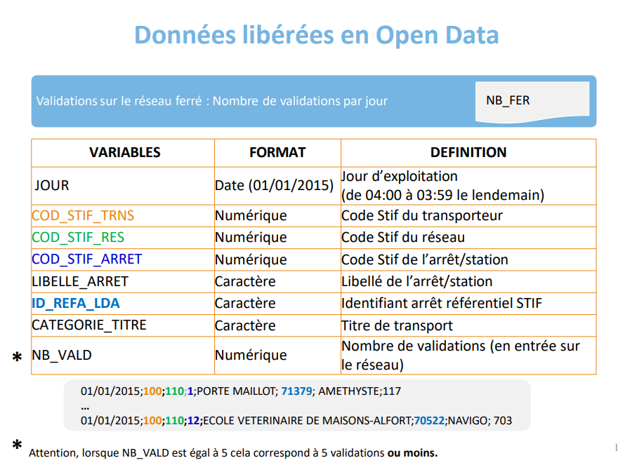
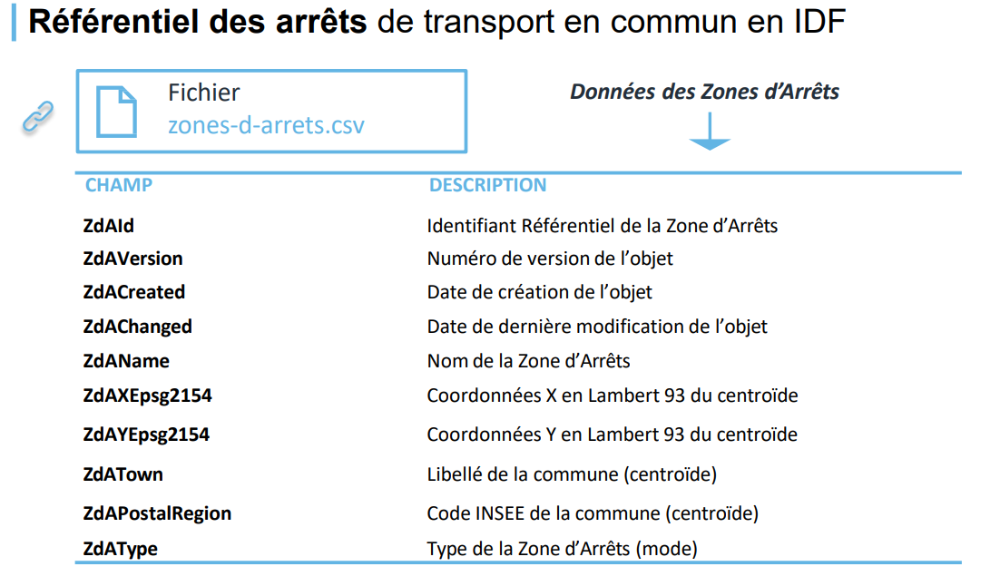
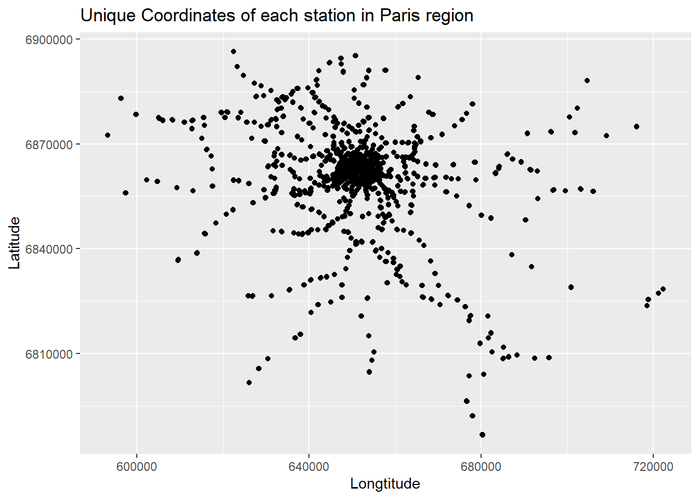
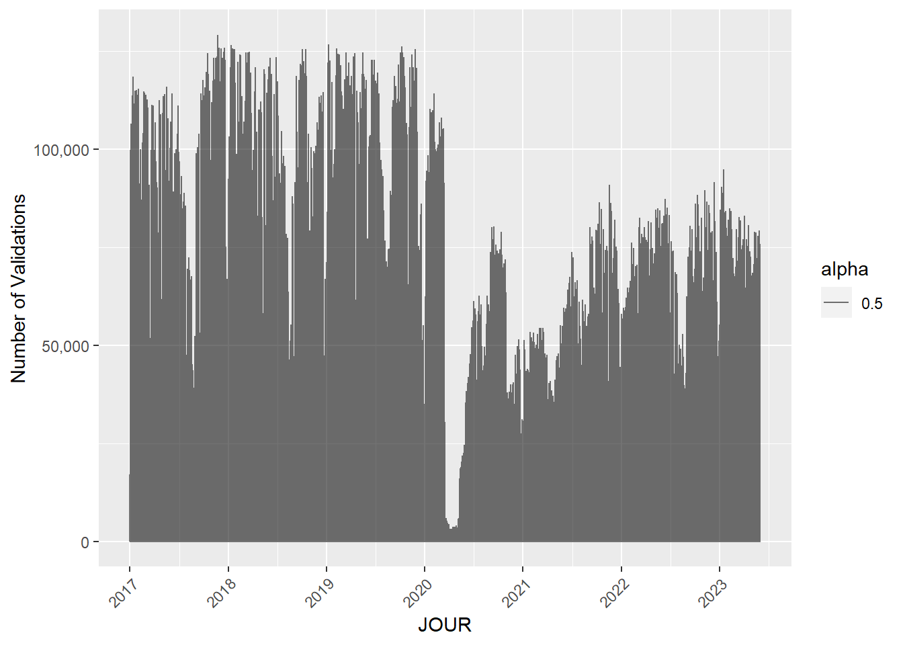
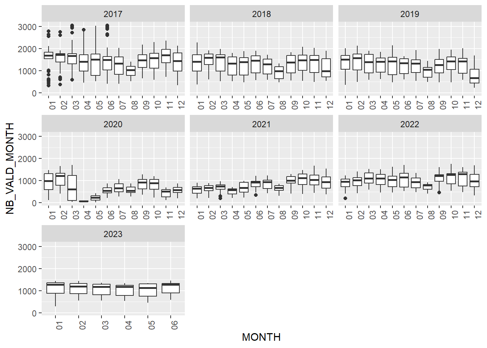
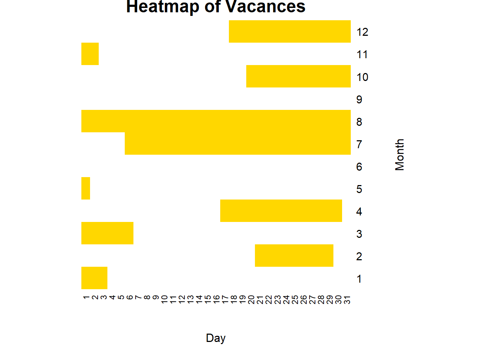
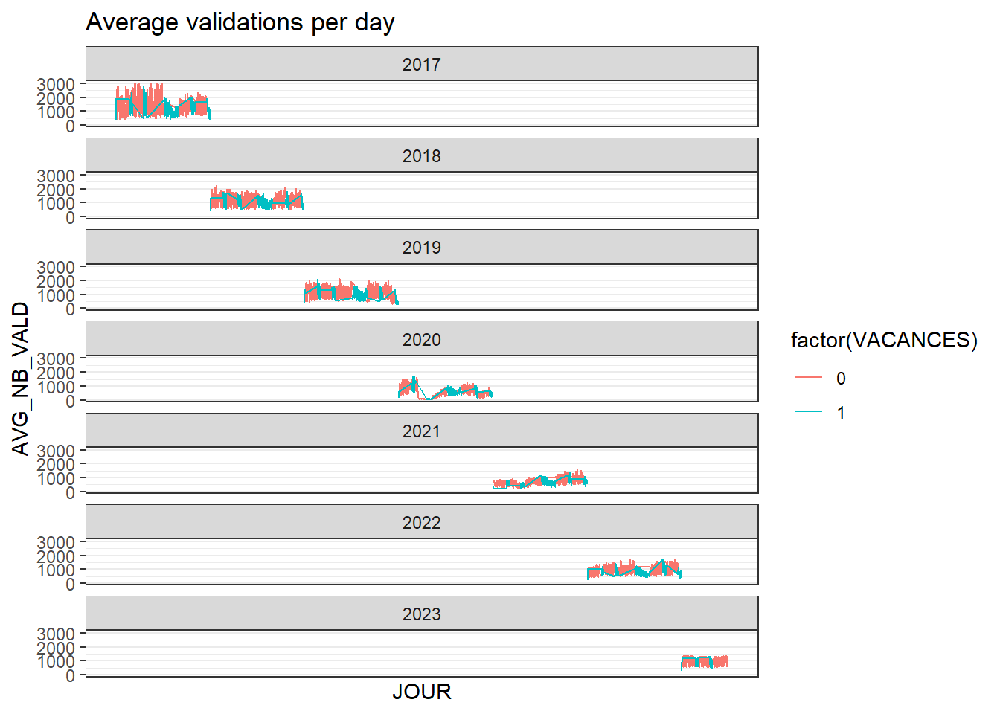
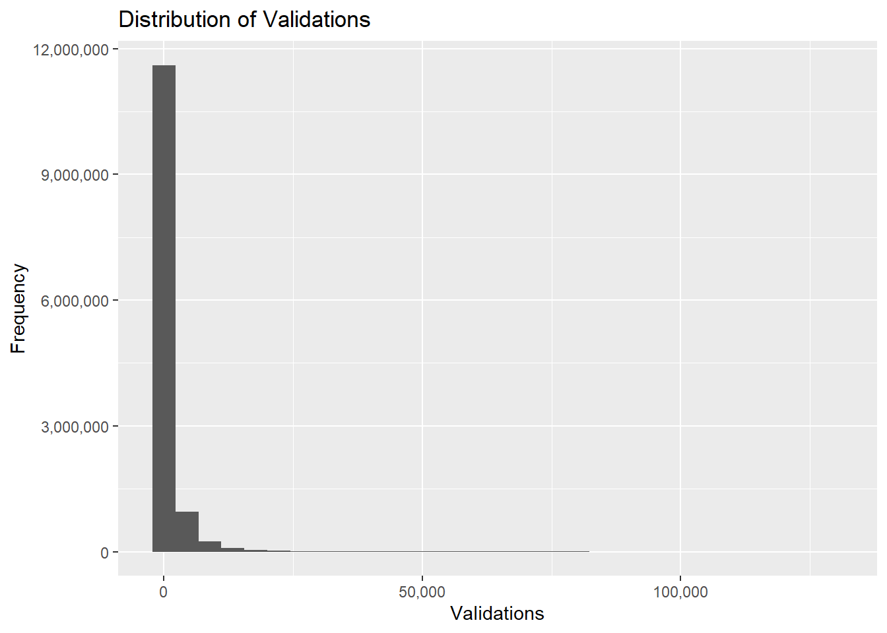
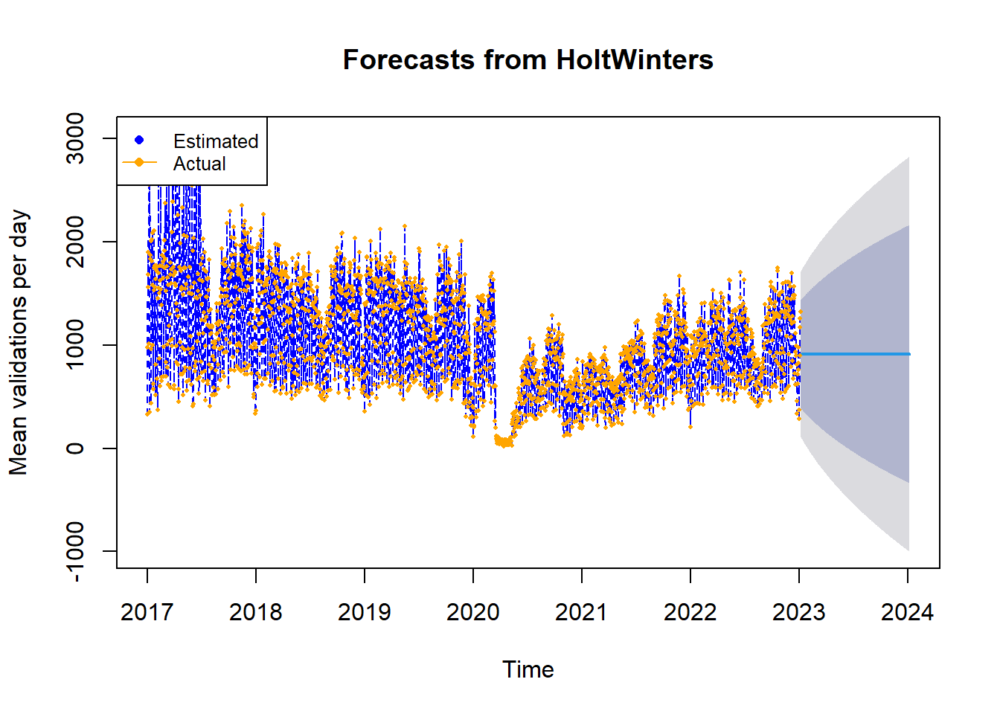

library(readr)
library(ggplot2)
library(dplyr)
library(lubridate)
library(tidyr)
library(shiny)
library(stats)
library(forecast)
library(kableExtra)report
Abstract
This report presents an in-depth analysis of ridership patterns at Île-de-France’s railway stations, spanning the years 2017 to 2023. The primary objective is to develop a comprehensive dashboard that facilitates real-time monitoring and comparison of ridership against the norm, particularly highlighting variations between regular weeks and holiday periods. To achieve this aim, we have collected extensive ridership data, geographical information of railway stations, and holiday schedules. Our exploratory data analysis will focus on four key areas: station distribution, seasonality trends, monthly fluctuations, and the impact of holidays. Additionally, we will conduct statistical tests to elaborate our observations and implement time-series forecasting techniques to anticipate future ridership trends. The resulting dashboard will empower stakeholders to make informed decisions regarding resource allocation and service optimization, ensuring the efficient operation of the railway network.
tuneshare
more_vert
add_photo_alternate
1. Import library
2. Data collection
2.1 Collecting ridership data from 2017-2022
The ridership data between 2017-2022 period from Île-de-France Railway Network can be found in: here.
Code
# Specify the folder path of data
folder_path <- "Data"
# Initialize an empty list to store the data frames
data_list <- list()
# get data set from folder
# Loop over the years from 2017->2022
for (year in 2017:2022) {
# Construct the subfolder path for the current year
subfolder_path <- paste0(folder_path, "/data-rf-", year, "/data-rf-", year)
file_names <- list.files(subfolder_path, full.names = TRUE)
# Loop over the file names and read each file
for (file_name in file_names) {
# Read the data file
data <- read.table(file_name, sep = "\t", header = TRUE)
# If the data has only one column, try reading with semicolon separator
if (ncol(data) == 1) {
data <- read.table(file_name, sep = ";", header = TRUE)
}
# Store the data frame in the list using the file path as the key
print(file_name)
data_list[[file_name]] <- data
}
}[1] "Data/data-rf-2017/data-rf-2017/2017_S1_NB_FER.txt"
[1] "Data/data-rf-2017/data-rf-2017/2017_S2_NB_FER.txt"
[1] "Data/data-rf-2017/data-rf-2017/2017_S2_PROFIL_FER.txt"
[1] "Data/data-rf-2017/data-rf-2017/2017S1_PROFIL_FER.txt"
[1] "Data/data-rf-2018/data-rf-2018/2018_S1_NB_FER.txt"
[1] "Data/data-rf-2018/data-rf-2018/2018_S1_PROFIL_FER.txt"
[1] "Data/data-rf-2018/data-rf-2018/2018_S2_NB_FER.txt"
[1] "Data/data-rf-2018/data-rf-2018/2018_S2_Profil_Fer.txt"
[1] "Data/data-rf-2019/data-rf-2019/2019_S1_NB_FER.txt"
[1] "Data/data-rf-2019/data-rf-2019/2019_S1_PROFIL_FER.txt"
[1] "Data/data-rf-2019/data-rf-2019/2019_S2_NB_FER.txt"
[1] "Data/data-rf-2019/data-rf-2019/2019_S2_PROFIL_FER.txt"
[1] "Data/data-rf-2020/data-rf-2020/2020_S1_NB_FER.txt"
[1] "Data/data-rf-2020/data-rf-2020/2020_S1_PROFIL_FER.txt"
[1] "Data/data-rf-2020/data-rf-2020/2020_S2_NB_FER.txt"
[1] "Data/data-rf-2020/data-rf-2020/2020_S2_PROFIL_FER.txt"
[1] "Data/data-rf-2021/data-rf-2021/2021_S1_NB_FER.txt"
[1] "Data/data-rf-2021/data-rf-2021/2021_S1_PROFIL_FER.txt"
[1] "Data/data-rf-2021/data-rf-2021/2021_S2_NB_FER.txt"
[1] "Data/data-rf-2021/data-rf-2021/2021_S2_PROFIL_FER.txt"
[1] "Data/data-rf-2022/data-rf-2022/2022_S1_NB_FER.txt"
[1] "Data/data-rf-2022/data-rf-2022/2022_S1_PROFIL_FER.txt"
[1] "Data/data-rf-2022/data-rf-2022/2022_S2_NB_FER.txt"
[1] "Data/data-rf-2022/data-rf-2022/2022_S2_PROFIL_FER.txt"Combine the two periods data for each year.
Code
data_years = list()
for (year in 2017:2022) {
path_file_1 = paste0(folder_path, "/data-rf-", year, "/data-rf-", year, "/", year, "_S1_NB_FER.txt")
path_file_2 = paste0(folder_path, "/data-rf-", year, "/data-rf-", year, "/", year, "_S2_NB_FER.txt")
data_file_1 = data_list[[path_file_1]]
data_file_2 = data_list[[path_file_2]]
if (year == 2022) {
names(data_file_2)[names(data_file_2) == 'lda'] = 'ID_REFA_LDA'
}
combined_data = rbind(data_file_1, data_file_2)
key = paste0(folder_path, "/data-rf-", year, "/data-rf-", year)
data_years[[key]] = combined_data
}
# Aggregate the data from 2017->2022 into one dataframe
combined_df = data.frame()
for(year in 2017:2022) {
# Get the data frame for the current year
key = paste0(folder_path, "/data-rf-", year, "/data-rf-", year)
df = data_years[[key]]
# Append the aggregated data for the current year to the final data frame
combined_df = rbind(combined_df, df)
}2.2 Collecting ridership data in the first period (first 6 months) in the year 2023
Read the CSV data file for first period of 2023. This ridership data can be found in: here.
Code
data_first_se_2023 = read_csv2("Data/validations-reseau-ferre-nombre-validations-par-jour-1er-semestre.csv",
col_types = cols(
JOUR = col_date(),
CODE_STIF_TRNS = col_integer(),
CODE_STIF_RES = col_integer(),
CODE_STIF_ARRET = col_character(),
LIBELLE_ARRET = col_character(),
lda = col_integer(),
CATEGORIE_TITRE = col_character(),
NB_VALD = col_integer()
)
)Get an overview of the data.
Code
head(data_first_se_2023)# A tibble: 6 × 8
JOUR CODE_STIF_TRNS CODE_STIF_RES CODE_STIF_ARRET LIBELLE_ARRET lda
<date> <int> <int> <chr> <chr> <int>
1 2023-06-26 800 853 568 MONTSOULT 67000
2 2023-06-26 800 853 568 MONTSOULT 67000
3 2023-06-26 800 853 568 MONTSOULT 67000
4 2023-06-26 800 853 568 MONTSOULT 67000
5 2023-06-26 800 853 595 NOINTEL MOURS 67227
6 2023-06-26 800 853 595 NOINTEL MOURS 67227
# ℹ 2 more variables: CATEGORIE_TITRE <chr>, NB_VALD <int>The image below describes the schema of the above dataset:

2.2.1 Cleaning ridership data from 2017-2022
Code
# Change the format of the date column to "day-month-year"
data_first_se_2023$JOUR = format(data_first_se_2023$JOUR, "%d/%m/%Y")
# rename the column of 2023 data to match 2017-2022 data
names(data_first_se_2023)[names(data_first_se_2023) == 'lda'] <- 'ID_REFA_LDA'
# sort the 2023 data as increasing order of the date time
data_first_se_2023 = data_first_se_2023 %>% arrange(JOUR)Combine data from 2017-2022 with 2023 data
Code
combined_df = rbind(combined_df, data_first_se_2023)Change the schema of columns for the combined ridership data (from 2017-2023)
Code
combined_df = combined_df %>%
mutate_at(vars(CODE_STIF_TRNS, CODE_STIF_RES, CODE_STIF_ARRET, ID_REFA_LDA, NB_VALD), as.integer) %>%
mutate_at(vars(LIBELLE_ARRET, CATEGORIE_TITRE), as.character)Check the missing values of each column.
Code
missing_values = colSums(is.na(combined_df))
missing_values JOUR CODE_STIF_TRNS CODE_STIF_RES CODE_STIF_ARRET LIBELLE_ARRET
0 0 8381 8381 0
ID_REFA_LDA CATEGORIE_TITRE NB_VALD
1832 0 27420 Drop rows with missing values.
Code
combined_df = combined_df %>%
filter(!is.na(CODE_STIF_RES)) %>%
filter(!is.na(ID_REFA_LDA)) %>%
filter(!is.na(NB_VALD))Check consistency of CATEGORIE_TITRE column.
Code
unique_values = unique(combined_df$CATEGORIE_TITRE)
print(unique_values)[1] "AMETHYSTE" "AUTRE TITRE" "FGT" "IMAGINE R" "NAVIGO"
[6] "TST" "NON DEFINI" "?" "NAVIGO JOUR"After checking consistency of CATEGORIE_TITRE column, we find there is anomaly data as “?” value. We need to drop this anomaly data.
Code
combined_df = combined_df %>%
filter(CATEGORIE_TITRE != '?')2.3 Collecting geographical data of railway stations in Paris
Read the geographical data. This geographical data of railway stations can be found from: here.
Code
geo_data = read_csv2("Data/zones-d-arrets.csv")
head(geo_data)# A tibble: 6 × 11
ZdAId ZdAVersion ZdACreated ZdAChanged ZdAName ZdAXEpsg2154
<dbl> <chr> <dttm> <dttm> <chr> <dbl>
1 490686 1523971-1… 2023-12-27 20:55:05 2023-12-27 20:56:37 Sycomo… 652954
2 43037 43037-602… 2014-12-29 15:31:51 2023-12-27 20:56:37 Gabrie… 653348
3 43419 1433458-1… 2014-12-29 00:00:00 2023-12-27 20:56:37 Carref… 650951
4 43989 43989-608… 2014-12-29 15:31:51 2023-12-27 20:56:37 Mairie 651785
5 48274 1469106-1… 2014-12-29 15:31:51 2023-12-27 20:56:37 Châtea… 652344
6 51037 51037-627… 2014-12-29 15:31:51 2023-12-27 11:30:52 Père C… 650853
# ℹ 5 more variables: ZdAYEpsg2154 <dbl>, ZdCId <dbl>, ZdAType <chr>,
# ZdAPostalRegion <dbl>, ZdATown <chr>The following image shows the schema of the above geographical dataset:

2.3.1 Cleaning geographical data
Change the name of ZdCId column of geodata to the same name of Id_stopping_points column from 2017-2023 data. This will be useful for join operator of these two geodata and 2017-2023 ridership data.
Code
names(geo_data)[names(geo_data) == 'ZdCId'] <- 'ID_REFA_LDA'
# change the schema of ID_REFA_LDA column from chart to int
geo_data$ID_REFA_LDA = as.integer(geo_data$ID_REFA_LDA)Sort the geodata according to the most recent update of locations. Then we remove duplicated station names.
Code
geo_data = geo_data[order(geo_data$ZdAChanged), ]
geo_data = subset(geo_data, !duplicated(ZdAName))Merge the two geodata and 2017-2023 ridership data by ID_REFA_LDA column. We only keep important columns, including longitude and latitude attributes of stopping points.
Code
joined_df = left_join(combined_df, geo_data, by = "ID_REFA_LDA")
joined_df = joined_df %>% select(1:8, 14, 15)After all the above pre-processing steps, we get overview of final-ready ridership dataset of railway stations for further analysis.
Code
head(joined_df) JOUR CODE_STIF_TRNS CODE_STIF_RES CODE_STIF_ARRET LIBELLE_ARRET
1 01/01/2017 100 110 1 PORTE MAILLOT
2 01/01/2017 100 110 1 PORTE MAILLOT
3 01/01/2017 100 110 1 PORTE MAILLOT
4 01/01/2017 100 110 1 PORTE MAILLOT
5 01/01/2017 100 110 1 PORTE MAILLOT
6 01/01/2017 100 110 1 PORTE MAILLOT
ID_REFA_LDA CATEGORIE_TITRE NB_VALD ZdAXEpsg2154 ZdAYEpsg2154
1 71379 AMETHYSTE 109 647372 6864457
2 71379 AMETHYSTE 109 647247 6864373
3 71379 AMETHYSTE 109 647503 6864496
4 71379 AMETHYSTE 109 647511 6864304
5 71379 AMETHYSTE 109 647359 6864669
6 71379 AMETHYSTE 109 647144 68644312.4 Collecting the holidays data in France
Thanks to author Etienne Côme, etc. the holiday dates data in France can be found from: here We first read the calendar data. It is important to note that we define holidays = official public holidays such as Christmas, school breaks, New Year Eve, etc.
Code
data_calendar = read.csv("Data/calendar.csv")
head(data_calendar) X date jour ferie vacances pont mois travaux_ete ferie_semaine
1 1 2015-01-01 Jeudi 1 1 0 1 0 1
2 2 2015-01-02 Vendredi 0 1 1 1 0 0
3 3 2015-01-03 Samedi 0 1 0 1 0 0
4 4 2015-01-04 Dimanche 0 1 0 1 0 0
5 5 2015-01-05 Lundi 0 0 0 1 0 0
6 6 2015-01-06 Mardi 0 0 0 1 0 0
ferie_weekend travaux_ete_semaine travaux_ete_weekend pont_semaine gratuite
1 0 0 0 0 1
2 0 0 0 1 0
3 0 0 0 0 0
4 0 0 0 0 0
5 0 0 0 0 0
6 0 0 0 0 0
greves_ratp confinement deconfinement travaux_m1_semaine travaux_m1_weekend
1 0 0 0 0 0
2 0 0 0 0 0
3 0 0 0 0 0
4 0 0 0 0 0
5 0 0 0 0 0
6 0 0 0 0 0
vacances_semaine vacances_weekend
1 1 0
2 1 0
3 0 1
4 0 1
5 0 0
6 0 02.4.1 Cleaning the holidays data
Convert the ‘date_column’ of holidays data from char to date type.
Code
data_calendar$date <- as.Date(data_calendar$date, format='%Y-%m-%d')Since the holidays data is varied in each year, we choose the holiday data in 2016 (the most updated year in the calendar data) as a defining holiday dates in France. We select the ‘date’ and ‘vacances’ fields.
Code
date_holiday = data_calendar[as.numeric(format(data_calendar$date , "%Y")) == 2016, ] %>%
select(c('date', 'vacances'))Get an overview of the final-ready holidays data.
Code
head(date_holiday) date vacances
366 2016-01-01 1
367 2016-01-02 1
368 2016-01-03 1
369 2016-01-04 0
370 2016-01-05 0
371 2016-01-06 0The holidays data will be used for estimating the impact of holidays period on the number of validations of railway stations in section 3.4.
3. Exploratory data analysis
Converting a data column to a proper format for time-series visualization
Code
joined_df$JOUR = as.Date(joined_df$JOUR, format = "%d/%m/%Y")Take the mean of the values for duplicated days. Then we select some columns for visualization.
Code
joined_df = joined_df %>%
group_by(JOUR) %>%
mutate(NB_VALD_MONTH = mean(NB_VALD, na.rm = TRUE)) %>%
select(c('JOUR', 'LIBELLE_ARRET', 'NB_VALD', 'ZdAXEpsg2154', 'ZdAYEpsg2154', 'NB_VALD_MONTH'))We extract month and year of the dataset as separate columns.
Code
joined_df$MONTH = format(joined_df$JOUR, "%m")
joined_df$YEAR = format(joined_df$JOUR, "%Y")
joined_df$DAY = format(joined_df$JOUR, "%d")3.1 Railway stations location of Paris region
Figure 1 displays the railway stations as 2D coordinates on Paris map region.
Code
df_unique <- distinct(joined_df, ZdAXEpsg2154, ZdAYEpsg2154, NB_VALD)
ggplot(df_unique, aes(x = ZdAXEpsg2154, y = ZdAYEpsg2154)) +
geom_point() +
xlab('Longtitude') +
ylab('Latitude') +
ggtitle('Unique Coordinates of each station in Paris region')
3.2 Seasonality trend
Figure 2 shows the overall trend of the number of validations of Île-de-France railway stations between 2017-2023. From Figure 2, we can see that from 2017-2020, the number of validations were high before it dropped significantly between 2020-2021; however, it started to recover from that time onwards.
Code
ggplot(joined_df, aes(x = JOUR, y = NB_VALD, alpha=0.5)) +
geom_line() +
scale_x_date(date_breaks = "1 year", date_labels = "%Y", limits = as.Date(c("2017-01-01", "2023-05-31"))) +
scale_y_continuous(labels = scales::comma) + # Format y-axis labels with commas +
labs(y = "Number of Validations") + # Add y-axis label
theme(axis.text.x = element_text(angle = 45, hjust = 1))
3.3 Monthly trend
Figure 3 illustrates the distribution of the number of validations through each month, between 2017-2023. We can also see there are a lot of outliers in 2017 plot, indicating that there is a great diverse in railway station usage.
Code
ggplot(joined_df, aes(x = MONTH, y = NB_VALD_MONTH)) +
geom_boxplot() +
facet_wrap(~YEAR, scales = "free_x") +
theme(axis.text.x = element_text(angle = 90, hjust = 1))
From Figure 3, it also can be observed that in every year, August is the period that witness a quite low distributions of validations, compared to other months. It is interesting that the year 2020 and 2021 show the lowest distribution of validations, compared to other years. This phenomenon might be explaned by the Covid-19 lockdown period.
Notably, the first 6 months of 2023 indicates a very stable trend of validations.
3.3 The distributions of holiday dates in France
In this section, we plot the distributions of holiday dates in France throughout the year.
First, we create a pivot table for heatmap distribution.
Code
heatmap_data = date_holiday %>%
mutate(month = month(date), day = day(date)) %>%
select(month, day, vacances) %>%
pivot_wider(names_from = day, values_from = vacances, values_fill=0)We then convert the pivot table to a matrix.
Code
heatmap_matrix = as.matrix(heatmap_data[, -1])Finally, we plot the heatmap. Figure 4 shows the holiday dates distribution throughout the year in France
Code
heatmap(heatmap_matrix,
Rowv = NA,
Colv = NA,
col = colorRampPalette(c("white", "gold"))(100),
scale = "none",
main = "Heatmap of Vacances",
xlab = "Day",
ylab = "Month")
It can be seen that from Figure 4, the holiday dates are mostly during labor days (by the end of April and the first day of May), the school breaks (July, August), Christmas and New Year celebration (by the end of December and the first periods of January).
3.4 The impact of holidays on the number of validations
We first add another ‘day’ and ‘month’ columns to holiday data. These two columns will be used for performing join operator with ridership data.
Code
date_holiday$MONTH = format(date_holiday$date, "%m")
date_holiday$DAY = format(date_holiday$date, "%d")We perform left join between the 2017-2023 ridership data and the holiday data.
Code
# perform left join
joined_df_new = left_join(joined_df, date_holiday, by = c("DAY", "MONTH"))Then, we perform the ‘group by’ operator to group duplicated dates of the ridership data, and take the mean number of validations per day.
Code
# change the format of a column year from char to int for the mean calculation
joined_df_new$YEAR <- as.integer(joined_df_new$YEAR)
# take the the mean of NB_VALD for each day
df_validation_avg <- joined_df_new %>%
group_by(JOUR) %>%
summarize(AVG_NB_VALD = mean(NB_VALD), YEAR = mean(YEAR), VACANCES = mean(vacances))Finally, we create a line plot between 2017-2023 for the mean number of validations per day. Figure 5 highlights the impact of holidays on the validations
Code
ggplot(df_validation_avg, aes(JOUR, AVG_NB_VALD, color=factor(VACANCES))) +
geom_line() +
facet_wrap(~ YEAR, ncol = 1) +
scale_x_continuous(breaks = 1:12, labels = month.abb) +
labs(title = "Average validations per day") +
theme_bw()
From Figure 5, it can be seen that there is an decreasing trend in the number of validations during holidays, most notably in the years 2017, 2018, 2019 and 2022.
4. Statistical tests
In this sections, we apply simple statistical methods to validate key findings from the section 3 (Exploratory data analysis), and draw meaningful insights from the considered data.
Before applying statistical methods, we first check the distribution of validations variable.
Code
ggplot(joined_df, aes(x = NB_VALD)) +
geom_histogram() +
labs(x = "Validations", y = "Frequency", title = "Distribution of Validations") +
scale_x_continuous(labels = scales::comma) +
scale_y_continuous(labels = scales::comma) 
From Figure 6, it can be seen that the distribution of validation variable is right-skewed and likely to follow a logarithm-distribution. For many hypothesis testing, it is assumed that the considered variable should follow a normal distribution (here). Therefore, we apply the log-transformation to turn it into the desired normal distribution.
Code
joined_df$NB_VALD = log(joined_df$NB_VALD)4.1 Seasonal hypothesis testing
From section 3.3, it can be assumed that the validations distribution of the year 2020-2021 are quite low compared to other years. We will conduct the T-test method (here) to validate this assumption.
Code
before_2020 = subset(joined_df, YEAR < 2020)$NB_VALD
after_2020 = subset(joined_df, YEAR >= 2020)$NB_VALDWe perform the T-test method of the above subset data with the confident level = 95%.
Code
t_test_2020 <- t.test(before_2020, after_2020)
print(t_test_2020)
Welch Two Sample t-test
data: before_2020 and after_2020
t = 120.47, df = 10035293, p-value < 2.2e-16
alternative hypothesis: true difference in means is not equal to 0
95 percent confidence interval:
0.1474408 0.1523176
sample estimates:
mean of x mean of y
5.039071 4.889192 The p-value after the T-test is less than 2.2e-16, which is essentially zero. A very small p-value indicates that the drop in validations of 2020-2021 period is happened systematically not randomly. This change can be influenced by the Covid-19 period, but this analysis is out of the scope of our project report.
4.2 School breaks hypothesis testing
We also want to see if the school breaks (during July-August) has impact on the number of validations of railway stations in Paris. We will utilize the T-test method for this hypothesis.
Code
# subset data during the school breaks
august_data <- subset(joined_df, MONTH == '08')$NB_VALD
# Subset data for other months
other_months_data <- subset(joined_df, MONTH != '8')$NB_VALDWe perform the T-test method of the above extracted subset data with the confident level = 95%.
Code
t_test_seasonal = t.test(august_data, other_months_data)
print(t_test_seasonal)
Welch Two Sample t-test
data: august_data and other_months_data
t = -84.836, df = 1040019, p-value < 2.2e-16
alternative hypothesis: true difference in means is not equal to 0
95 percent confidence interval:
-0.1943995 -0.1856198
sample estimates:
mean of x mean of y
4.756607 4.946617 In this case, the small p-value suggests that there is a systematic change (a decreasing trend) in the ridership pattern during the school breaks period.
4.3 Holidays hypothesis testing
Similar to section 4.1 and 4.2, we also apply the T-test statistical method to validate whether or not the ridership pattern is influenced by the holiday dates in France. According to section 3.4, we form a hypothesis that considers the number of validations is reduced during holidays compared to non-holiday dates.
Code
holiday_data = subset(joined_df_new, vacances == 1)$NB_VALD
non_holiday_data = subset(joined_df_new, vacances == !1)$NB_VALDWe conduct the T-test method on the two subset holiday and non-holiday dates. Note that the significance level is set to \(\alpha\) = 0.05, or confidence level \(c = 1 - \alpha\) prior the experiment.
Code
t_test_impact_holiday = t.test(holiday_data, non_holiday_data)
print(t_test_impact_holiday)
Welch Two Sample t-test
data: holiday_data and non_holiday_data
t = -76.078, df = 8273931, p-value < 2.2e-16
alternative hypothesis: true difference in means is not equal to 0
95 percent confidence interval:
-165.6048 -157.2863
sample estimates:
mean of x mean of y
929.9955 1091.4410 After the T-test experiment, the p-value obtained is less than 2.2e-16, which suggest the acceptance of our hypothesis (there is a drop in the number of validations during holiday periods).
4.3 Times-series forecasting
In this section, we use the time-series model, called HOLT-WINTERS, xxx to estimate the mean number of validations per day for railway stations. HOLT-WINTERS uses a technique called exponential smoothing, which means that it gives more weight to the recent data points and less weight to the older ones. This way, it can adapt to the changes in the time series over time.
We first create a time-series object with the index time from 2017-2023 and the values are the average number of validations per day.
Code
# Get the start and end dates
start_date <- min(df_validation_avg$JOUR)
end_date <- max(df_validation_avg$JOUR)
# Create a time series object using the AVG_NB_VALD column
ts_data <- ts(df_validation_avg$AVG_NB_VALD, start = c(year(start_date), month(start_date)), end = c(year(end_date), month(end_date)), frequency = 365)
ts_dataTime Series:
Start = c(2017, 1)
End = c(2023, 6)
Frequency = 365
[1] 331.84014 975.54369 1901.91718 1687.32685 1560.78615 2558.51387
[7] 1016.70807 349.09578 2789.55187 2640.12938 1836.11588 1873.08086
[13] 2008.14433 960.71221 439.80060 2024.51220 1817.14312 1002.64541
[19] 2085.92379 1580.61712 627.36493 573.39871 1531.37772 2111.27962
[25] 1751.53575 1773.06875 1563.55917 815.10744 514.15122 1642.40588
[31] 1769.01588 1725.36930 1758.31437 1714.43077 675.27283 371.42461
[37] 1454.24802 1555.49899 2753.84746 1697.50934 1503.09624 871.08559
[43] 605.79762 1772.91813 1623.04101 2595.90909 1542.05247 1390.63349
[49] 687.99692 655.66367 1766.17873 1874.76694 1646.93814 1805.96626
[55] 1862.98928 988.64921 697.21288 1749.95170 1915.14982 2017.70950
[61] 2375.57911 1833.70868 833.99541 697.43005 1523.15446 2716.94047
[67] 1759.90534 1656.34672 1005.05283 784.60992 618.25728 1581.27325
[73] 2996.30290 1188.92352 3050.17447 1300.03700 1042.46944 587.57723
[79] 1683.95201 1799.37819 1737.88490 1595.66856 2097.77555 1056.91395
[85] 994.12903 2926.04348 2389.22676 1755.88716 1674.21118 3005.08974
[91] 575.16039 609.05637 1711.98552 1695.26680 1599.55038 2819.16883
[97] 1575.09806 994.52732 833.93723 1405.85742 1337.11054 2619.13191
[103] 2257.21961 1278.56294 814.08207 574.49094 451.98078 2854.02155
[109] 2635.37186 1754.57406 1989.06562 1025.68971 716.25634 1744.93368
[115] 1717.04354 1536.80215 1562.69136 2329.06314 977.88174 717.98522
[121] 519.23580 1488.99942 2568.18461 1749.42620 2067.73883 958.34616
[127] 743.87025 783.84451 1752.28728 1546.97017 2724.14389 1587.79390
[133] 645.84279 560.42566 2054.78240 3021.44255 2925.54274 2719.59072
[139] 1665.10740 965.33158 657.90996 1502.11641 2609.46274 1759.67165
[145] 773.47937 1088.00261 922.35356 618.69958 1562.28014 1496.79189
[151] 2549.56768 1499.43058 1914.92253 970.79791 408.18668 433.58170
[157] 2040.61743 1601.27639 2999.31250 2980.36402 797.05227 746.00887
[163] 1459.75194 2946.31667 839.52898 2953.25207 2602.93066 1034.01659
[169] 667.96527 1454.12430 1692.82368 1528.54575 1108.53812 2887.49791
[175] 531.54225 686.35333 1635.30535 1485.16757 3045.78059 2652.57718
[181] 1787.02032 840.39554 731.84966 1245.62679 1396.85556 1619.05173
[187] 1841.46196 2027.89161 1112.08638 656.52233 1320.01764 1731.40329
[193] 1237.59706 1897.61930 749.15839 993.37218 467.89180 1713.46085
[199] 1276.60577 1465.30928 1466.87813 1642.76245 656.45899 627.85613
[205] 1196.09617 1532.83690 1650.48533 1828.14829 1334.44877 808.87867
[211] 410.59256 1170.54245 1105.02102 1347.26043 1188.61609 1114.42995
[217] 778.03301 514.52598 1169.50147 1190.15095 891.61245 1025.62429
[223] 979.63664 588.67657 523.23079 855.86980 515.12385 980.93402
[229] 1014.63267 1035.64817 755.34671 525.88227 1405.98336 1110.84517
[235] 1209.75962 1111.88934 1332.35337 809.42569 572.28472 1196.69794
[241] 1228.12217 1054.81262 1403.12998 1229.25107 965.46740 657.66606
[247] 1141.48448 1468.39725 1475.66736 1545.87996 1936.35734 974.74636
[253] 739.13547 1226.24142 1794.04791 1530.46792 1782.61610 1830.96992
[259] 924.69117 699.29889 1478.42079 1405.79643 1594.39206 1837.55508
[265] 1769.15345 1057.75105 935.59750 1474.45832 1537.09177 2181.75265
[271] 1715.56373 1421.55433 1171.78015 594.42215 1725.88175 1382.91060
[277] 1647.86741 1651.94223 2295.31227 1024.39026 759.68102 1392.18184
[283] 1691.51200 1872.48464 2047.53307 1756.93123 1276.33901 881.71386
[289] 1754.54521 1784.82355 1332.86834 2148.63996 2039.71712 1108.65738
[295] 752.75659 1875.58053 1409.10434 1973.55228 1564.59357 1564.50657
[301] 996.79585 796.76882 1710.10839 1449.47001 940.03986 1681.12064
[307] 1740.26402 1020.82780 769.79558 1782.69224 1533.81496 1530.55054
[313] 1693.56547 1962.11838 995.25487 744.27653 1717.50758 1664.00205
[319] 2351.42857 1873.99946 2011.56476 1365.09273 765.17690 1632.84897
[325] 2156.15056 1530.11730 2099.57694 2204.01031 826.70000 715.04708
[331] 2013.86881 2076.61550 1826.82004 1528.57197 1800.83636 777.06057
[337] 716.13406 1571.31781 2085.14047 1862.48114 1966.88365 1735.80809
[343] 1205.26638 802.84763 1945.91747 1797.46402 1631.22103 1348.61756
[349] 2132.97857 985.59464 726.91007 1632.46078 1943.69162 1648.17007
[355] 1907.34702 1431.66857 971.55145 521.75629 493.37058 1013.15175
[361] 1174.00563 1268.20058 1162.31724 1013.48817 335.91044 366.87790
[367] 978.25486 1343.14896 1944.56797 1323.08516 728.15476 598.71652
[373] 1335.22232 1982.29298 1625.65524 1719.04662 1208.26599 911.53452
[379] 686.63938 1502.33890 2058.62972 1820.84934 1614.18621 2109.39471
[385] 1218.28355 618.94960 1268.09750 1819.57217 1511.83780 1699.70135
[391] 2270.06134 1019.28671 672.26224 1401.78769 1576.20042 1044.73848
[397] 1592.32082 1522.85018 1048.54579 672.71841 1616.44178 1755.01224
[403] 1586.15546 1642.06250 1745.16978 1152.17577 723.09808 1374.06207
[409] 1857.19930 1646.00102 1909.98318 1857.77272 816.09735 610.79352
[415] 1281.38447 1843.66973 1353.64176 1783.90403 1418.66697 895.77382
[421] 655.06581 1497.41127 1308.32401 1717.10457 1419.21164 1429.91774
[427] 898.57486 549.72930 1597.69100 1743.35616 1613.65682 1981.28920
[433] 1699.85687 979.88173 562.04524 1561.64595 1730.95427 1879.12187
[439] 1970.81551 1539.40192 825.31308 678.57249 1464.63649 1962.57815
[445] 1362.80483 1515.32557 1681.86371 919.86337 528.83160 1696.13877
[451] 1641.12028 1795.66483 1716.91878 1679.85050 880.50315 581.03441
[457] 598.10690 1199.92961 1622.70168 1685.77485 1383.07889 826.03787
[463] 651.10923 1673.34346 1797.29562 1715.70935 1681.63274 1774.63659
[469] 1074.85927 528.26922 1359.50799 1229.85854 1656.28143 1551.17296
[475] 1325.08134 802.02329 756.22803 1354.00875 1216.73498 1319.37729
[481] 1558.45734 1345.65754 798.39062 542.73085 1251.93896 477.84957
[487] 1590.01387 1415.66658 1841.48747 1095.50993 600.12983 1495.58774
[493] 734.19858 1381.84040 852.40028 1385.86975 732.66002 519.56669
[499] 1452.72500 1740.81011 1778.20903 1588.93318 1798.46758 797.90364
[505] 562.09708 714.09151 1289.96966 1431.14172 1651.23407 1875.27901
[511] 957.53581 545.81395 1207.46725 1624.78059 1148.71821 1590.14646
[517] 1572.49794 965.41286 578.32760 1651.13447 1518.85358 1357.84041
[523] 1735.67572 1610.64191 891.66991 632.00595 1755.20021 1684.79150
[529] 1669.37305 1697.94435 1348.27031 850.87546 623.63168 1341.37430
[535] 1088.44093 1448.52777 1676.15930 1681.43977 859.01857 566.09589
[541] 1428.48822 1544.59637 1333.28863 1894.79129 1434.45212 874.17482
[547] 625.10146 1681.80151 1614.04024 1587.14147 1585.85561 1539.71297
[553] 845.92735 625.65267 1284.02267 1391.89248 1229.01649 1516.41178
[559] 1410.95687 883.94494 788.84021 1266.70803 1186.04973 1415.72226
[565] 1358.14010 1462.06996 722.52278 589.79869 1444.63301 1276.56689
[571] 1563.29337 1332.95136 1713.43153 837.45881 608.40559 1080.20815
[577] 1292.59402 1319.21361 1178.73355 896.76295 572.03525 507.42127
[583] 990.58463 1008.45406 1184.67674 1261.30967 943.17021 481.20378
[589] 513.62753 821.79835 1079.36951 629.54624 918.85473 884.94131
[595] 542.60169 469.66106 983.32167 1171.21050 1147.84278 1103.81596
[601] 984.07258 673.38728 505.11640 1318.11502 1249.76315 1248.13475
[607] 1217.91871 1020.80152 746.83100 561.66521 1253.56704 1369.14411
[613] 1185.81418 1309.15739 1381.64214 1043.95367 564.75838 1184.48248
[619] 1765.44488 1551.59024 1713.38300 1460.49304 893.02153 855.85514
[625] 1666.50130 1295.32373 1469.73559 1666.64853 1759.49387 855.50769
[631] 667.26062 1686.15156 1820.68280 1833.10145 1712.21069 1634.85257
[637] 984.99746 803.07830 1357.11541 1945.29524 1375.58675 1878.50035
[643] 1369.67764 931.04254 536.98161 1574.26416 1525.51264 1555.22712
[649] 1352.23370 1894.03875 1020.25327 693.33172 1500.28844 1702.61248
[655] 2081.66071 2084.58303 1530.87716 967.17112 794.35391 1244.37845
[661] 1781.64079 1292.73256 1310.77233 1834.44188 928.33645 669.32709
[667] 1489.78784 1474.65741 1557.15992 565.30338 911.20056 764.85967
[673] 560.45417 1585.14817 1499.25747 1331.20448 1494.35052 1706.28658
[679] 915.62542 489.38773 1798.84803 1425.46182 1777.56058 1563.09464
[685] 1752.25236 970.52707 793.97562 1293.69811 1571.70139 1540.10974
[691] 1432.49894 1478.69861 757.65567 584.69338 1266.04908 1518.70571
[697] 1819.41680 1678.00209 2035.45379 712.08110 721.26588 1261.40938
[703] 1668.58832 1292.86783 1209.38545 1324.10715 772.33733 712.16699
[709] 1687.34386 1112.96118 1196.93372 1751.49572 1900.80057 756.87972
[715] 666.44484 1647.59972 1546.93729 1535.34880 1667.47868 1497.81341
[721] 830.43484 570.29754 876.49774 538.61214 811.31953 807.90498
[727] 985.06162 680.51424 603.16275 583.92019 356.23933 1403.31200
[733] 1099.54769 1388.54656 709.60196 515.68937 1673.42675 1854.78730
[739] 1849.45667 1420.32446 1179.82768 730.89221 494.20748 1497.74111
[745] 1740.77034 1532.76928 1596.82843 1695.96405 1067.95152 425.00895
[751] 2008.89121 1683.28594 1519.12248 1720.57914 1830.44953 850.97036
[757] 532.69988 1500.63156 1644.01044 1212.83598 1325.38614 1481.68740
[763] 1030.86580 617.39836 1329.59060 1621.37280 1511.74989 1893.25853
[769] 1650.43156 985.44777 490.52126 1832.11057 1773.57850 1607.91534
[775] 1623.81439 1569.43702 844.12510 593.58920 1370.63562 1752.28934
[781] 1800.42809 1611.74572 2124.55110 1023.75937 718.95869 1194.74811
[787] 1642.09745 1784.57045 1545.69440 1375.31164 757.07530 631.20144
[793] 1288.80899 1641.35994 1314.30286 1103.55212 1606.27247 819.35729
[799] 717.71727 1727.89735 1649.63059 1387.09705 1769.81017 1848.74411
[805] 1011.40735 643.48628 1322.62574 1592.25749 1762.03701 1605.77991
[811] 1808.11879 903.51792 593.25519 1379.53179 1731.79011 1804.57113
[817] 1509.47371 1890.71313 824.92279 696.91311 1573.01842 1433.43054
[823] 1702.12121 1372.25426 1620.17345 925.03423 618.48075 1697.27319
[829] 1398.93239 1564.31321 1818.23114 1851.60237 742.32866 683.20366
[835] 1355.73287 1566.24387 1359.02717 1519.64139 1363.57946 812.80959
[841] 614.92892 707.19099 1351.43610 1412.47194 1625.24255 1601.54772
[847] 850.09667 662.98293 1460.81245 1426.81650 528.98433 1497.40786
[853] 1423.83739 669.97155 592.55892 1233.85797 1600.66488 698.55012
[859] 1374.65668 1582.44872 806.02938 473.59263 1548.58163 1656.58935
[865] 1426.04837 1808.19373 2152.33014 819.41366 642.20467 1743.56143
[871] 1493.29795 1601.76671 1478.92040 1787.98049 868.39776 561.22597
[877] 1315.46851 1607.93598 1223.15865 570.92454 881.61954 861.30820
[883] 606.25833 1339.06947 1650.53698 1282.35249 1319.10532 1596.65836
[889] 945.42687 677.91627 704.94734 1557.99140 1332.64104 1202.41863
[895] 1154.21906 960.68006 637.73711 1258.15588 1610.53163 1469.63470
[901] 1646.81220 1523.53801 742.80520 663.19582 1535.96330 1439.15380
[907] 1381.28356 1376.28498 1578.90840 712.75648 794.42137 1322.04418
[913] 1933.57312 1530.88336 1371.06288 1905.08715 781.03987 619.67280
[919] 969.91963 1572.33002 1546.12139 1619.87855 1454.04540 882.02915
[925] 717.56803 1633.29472 1466.60418 1183.85793 1432.56980 1480.56892
[931] 851.11145 574.87206 1267.42503 1014.11091 1352.44132 1546.59399
[937] 1152.33808 916.14701 543.00000 1415.13262 1147.61744 1242.27279
[943] 1277.55726 1084.55664 695.42254 492.49722 1140.72935 934.89262
[949] 1261.49318 1235.13003 1052.13952 577.01506 515.16824 1185.65613
[955] 938.75525 1262.63459 648.61662 807.83196 621.28397 525.78817
[961] 1066.26934 929.81517 889.97399 1124.61201 1090.37705 618.82938
[967] 571.57443 845.07794 1437.78867 1076.08040 1057.58790 1295.02559
[973] 779.01007 464.88827 980.62752 1685.02563 1296.39663 1497.59154
[979] 1231.56054 792.29899 517.09843 1973.65910 1811.51678 1409.46932
[985] 1256.60439 910.65676 900.79488 536.92101 1211.69604 1768.88381
[991] 1506.83800 1323.11086 1729.61602 751.31320 688.66851 1363.57280
[997] 1243.90929 1188.12304 1911.72489 1350.57334 994.94538 645.30384
[1003] 1599.19364 1241.16336 1341.74625 1609.06636 1948.56747 1039.85506
[1009] 668.20965 1529.62733 1667.13419 1600.43468 1834.27087 1656.99421
[1015] 775.05373 722.62328 1627.60924 1772.81198 1643.63990 1361.30732
[1021] 1608.18269 889.60038 476.41424 1621.35620 1489.75969 1304.48373
[1027] 1430.79631 1527.01705 866.83366 589.57123 1407.04707 1126.44877
[1033] 1112.32907 1214.79437 614.55730 636.29546 588.08682 1619.66925
[1039] 1455.19053 1430.96842 1707.65562 1528.38895 983.31335 582.30025
[1045] 658.09468 1452.63006 1202.65928 1878.94030 1662.68332 898.50263
[1051] 635.02867 1194.07492 1492.36906 1667.39649 1367.92274 2007.38968
[1057] 877.90288 667.36944 1546.07595 1517.62271 1336.58445 1577.90181
[1063] 1428.31261 1079.37867 435.89541 1500.85341 1215.04405 1681.42276
[1069] 434.31623 920.13767 463.22628 308.22070 1118.62382 918.97447
[1075] 1062.77778 1027.50872 1084.78599 543.82509 400.66494 669.54902
[1081] 954.11127 1380.73410 927.06121 1004.83401 443.41879 290.87525
[1087] 668.44865 682.94890 222.49205 624.59811 625.56859 308.41174
[1093] 298.44537 412.11250 490.99796 111.21706 395.30764 628.22541
[1099] 224.83785 208.36174 1202.16241 743.87397 871.20656 600.28929
[1105] 902.98135 300.59789 360.03752 1249.99217 817.55204 1150.58632
[1111] 982.88691 1466.72201 539.89837 366.43461 1251.12426 1454.46992
[1117] 1142.34648 1174.41941 754.62962 611.47329 469.92049 1454.89346
[1123] 1353.03081 1476.36303 1433.79257 1319.01341 694.75525 410.55039
[1129] 1441.27263 1481.69095 1296.87812 1440.25575 1422.98200 782.20864
[1135] 462.48071 1322.50135 1209.28249 1205.43042 1294.17560 1153.26318
[1141] 763.37484 663.39796 1153.44118 1263.87406 1301.33533 1472.40139
[1147] 1200.31491 847.05178 611.35486 1161.88223 1586.24816 1319.38853
[1153] 1664.96476 1084.16762 786.02007 445.77345 1533.93459 1700.18431
[1159] 1438.91901 1202.50703 1441.54720 853.02087 596.39560 1202.31409
[1165] 1630.25961 1227.09835 1522.61744 1128.07668 611.10445 263.95347
[1171] 603.58727 200.85388 110.91991 119.01359 93.84220 68.80092
[1177] 44.88138 113.22185 91.19629 94.17146 62.67006 85.23444
[1183] 61.92287 38.75997 98.15251 87.06441 65.55419 79.39339
[1189] 66.13659 48.70124 37.62971 80.07282 87.39756 70.72016
[1195] 81.12974 60.55600 40.86173 21.78729 41.19081 77.85714
[1201] 85.52176 68.48272 65.80405 38.42694 34.94131 35.35201
[1207] 87.33292 76.39975 72.90308 78.44376 37.08838 34.31219
[1213] 78.22178 74.66112 71.43764 56.79530 37.17677 48.10636
[1219] 39.97441 89.89875 72.02682 106.68097 106.99851 33.94049
[1225] 68.43043 27.08703 235.81463 260.35853 336.56006 278.56484
[1231] 286.92369 161.55405 110.22706 349.65925 315.29179 347.20618
[1237] 197.04754 225.80768 212.14415 126.24565 436.97627 362.89241
[1243] 256.73523 308.08959 265.23462 263.68526 204.92769 292.71721
[1249] 580.31576 540.54709 471.22472 490.46222 345.49360 207.69267
[1255] 504.33962 508.21882 470.99845 698.73247 776.43950 430.38476
[1261] 246.10713 618.49697 620.82991 735.49754 797.58483 535.47966
[1267] 438.60509 322.94524 683.54929 840.72280 671.21101 642.68374
[1273] 827.01284 467.41645 264.28735 866.81206 634.80087 892.75527
[1279] 789.09510 649.06456 514.97058 320.93980 868.63088 649.06233
[1285] 623.81696 857.45838 1064.51374 492.64700 328.04121 516.55868
[1291] 422.13915 853.28504 691.97706 962.03364 470.88030 318.19361
[1297] 783.52052 874.31610 998.70896 820.62410 816.17650 484.76769
[1303] 284.42188 652.51223 628.65832 688.99026 857.33873 670.66844
[1309] 450.08878 282.98068 752.46037 707.68806 488.63777 708.66522
[1315] 592.76187 468.87442 334.85974 462.53889 744.86855 531.51798
[1321] 581.59716 538.75909 324.55368 386.10838 565.45476 529.85465
[1327] 527.59410 756.39232 589.22403 477.33225 391.27902 637.25424
[1333] 749.72552 868.42136 809.97231 701.20413 540.38379 368.10498
[1339] 569.16636 814.89494 844.63531 1040.09672 1050.74122 612.23275
[1345] 406.43293 1094.87961 1006.28375 1155.29861 1034.48230 640.50069
[1351] 612.77983 446.76726 1150.36131 1052.81896 924.41259 1045.10008
[1357] 913.87881 554.14192 428.41433 1093.01079 1287.29144 1038.76101
[1363] 805.71715 977.18863 623.08835 360.70803 932.64083 1047.38847
[1369] 869.71096 1141.67218 917.21567 607.93070 369.62360 931.66863
[1375] 857.44435 1054.46659 1065.82040 886.45677 609.45642 471.91352
[1381] 972.18107 1095.98419 855.05480 1118.64758 1200.77362 528.93820
[1387] 316.51010 1024.06190 828.04848 781.50816 1040.68166 822.84150
[1393] 704.54402 387.81869 1057.23010 1101.36327 881.83481 912.41495
[1399] 526.89962 239.06011 119.95134 547.57258 645.97266 529.42656
[1405] 539.12747 519.20528 238.46037 132.98042 523.15683 455.15994
[1411] 151.40934 593.85677 466.80777 260.63400 134.69682 612.07681
[1417] 481.53317 643.21966 512.14197 516.06592 281.29949 129.89982
[1423] 642.87029 688.15207 548.09026 591.93483 459.95024 497.16657
[1429] 206.69779 631.84807 564.30999 575.07540 619.73934 640.38584
[1435] 460.35862 257.10994 745.53264 667.14445 568.29755 736.41447
[1441] 696.76532 374.21122 264.06090 684.65053 769.04485 863.59347
[1447] 718.50363 655.16298 562.67197 317.91807 618.29091 723.87204
[1453] 452.68145 613.90138 202.23912 287.87658 232.99172 519.68319
[1459] 556.17439 480.13584 469.43815 195.23823 357.57976 217.09397
[1465] 844.24952 648.25874 691.72810 692.25185 613.92389 425.22739
[1471] 334.68823 561.79639 698.40456 805.99070 727.93268 749.81718
[1477] 495.70878 282.26540 813.83546 653.16050 589.18169 822.39654
[1483] 650.52593 480.68505 335.36886 882.80424 654.13216 661.95575
[1489] 793.54394 910.16892 580.22317 415.44437 883.77230 788.98740
[1495] 707.00129 621.72681 820.76935 445.56381 276.99770 666.52651
[1501] 861.39778 745.88224 855.50530 817.59763 545.17504 318.35717
[1507] 551.82541 619.57542 779.95858 612.87781 527.54619 450.22883
[1513] 221.75426 672.92349 771.64548 744.49806 626.30764 674.18429
[1519] 426.79602 413.65771 671.93504 796.98645 764.63215 734.63640
[1525] 799.66295 475.63415 358.40218 762.19170 688.98063 875.93836
[1531] 828.96011 812.69125 473.55855 350.25730 622.21320 738.30488
[1537] 907.46795 975.38567 878.96426 294.70204 201.42028 604.95950
[1543] 629.88307 856.85138 746.75698 771.01646 421.69209 353.47409
[1549] 677.10703 723.43223 784.97631 712.06311 679.02078 377.51636
[1555] 286.96026 257.14513 617.71599 632.96592 639.78517 578.41017
[1561] 352.46234 222.00266 691.00601 623.76147 607.13431 585.30068
[1567] 557.38056 423.25847 236.73339 545.88810 565.84602 475.55316
[1573] 643.77645 630.25251 388.67415 300.45043 589.50873 658.48747
[1579] 620.96737 507.34360 557.79386 286.03813 247.02906 632.99460
[1585] 648.59123 692.26703 686.93112 658.48793 401.52765 395.05781
[1591] 838.46380 915.16414 718.49557 398.05215 518.16639 354.42266
[1597] 237.92487 608.91939 679.13476 906.18651 924.88079 986.86497
[1603] 666.89498 376.42733 477.62512 970.61146 860.98065 954.08740
[1609] 976.14406 621.44793 531.01709 974.64639 888.59497 730.94048
[1615] 910.80046 935.31479 559.94590 600.10719 861.97465 956.80648
[1621] 1020.98131 897.08688 953.35209 830.53889 502.67767 813.33026
[1627] 967.24964 871.28904 1036.52882 1041.68891 557.54848 457.93639
[1633] 1004.61455 793.31712 919.61651 940.78648 1037.93503 711.82880
[1639] 353.54452 953.12896 967.21107 1216.16039 944.30274 976.84001
[1645] 693.93265 430.60664 987.51904 1239.98141 1072.69480 1061.82124
[1651] 732.60238 649.30375 545.78215 910.69700 1088.95438 572.31030
[1657] 973.22687 1133.35626 622.77739 473.73912 1023.79071 904.17737
[1663] 1104.39704 1114.30802 950.82681 562.01299 493.14297 938.28039
[1669] 820.79312 705.39263 727.83738 1014.94047 596.29656 390.75200
[1675] 738.45521 847.00244 605.93173 830.37873 622.60282 433.39380
[1681] 402.01498 534.59665 846.80834 771.08603 744.14890 657.61077
[1687] 512.60907 333.66067 682.05376 681.85333 790.63307 770.73808
[1693] 704.90606 600.28311 399.03367 699.34838 664.72778 704.69449
[1699] 721.84565 783.25631 556.35041 316.97132 681.54174 766.94810
[1705] 993.35960 1104.64094 1070.24957 585.55240 500.35433 908.00108
[1711] 941.21947 951.70035 1221.55556 1244.84575 601.76693 419.33625
[1717] 1104.83527 1124.27545 1190.34691 1291.64089 1201.98956 753.53821
[1723] 498.98028 1007.64188 1266.13552 943.37101 1247.29977 1091.70754
[1729] 630.46002 511.52574 881.46396 1278.95976 1114.85977 942.59302
[1735] 992.64406 789.40908 387.96048 1180.32701 1119.67324 1400.76880
[1741] 1484.72534 1430.61626 818.93797 482.57831 1174.62677 1120.15090
[1747] 1109.73036 1183.08832 1432.94499 835.44507 578.97768 1296.59743
[1753] 1424.29128 1218.90099 1238.47995 1015.76635 858.81856 595.07878
[1759] 1248.34508 1417.84067 1352.29129 981.83990 933.85085 691.23995
[1765] 694.39455 439.17326 909.20254 1004.76788 1038.80953 1040.72187
[1771] 729.42509 530.42855 1323.42378 1040.68754 1285.56070 645.74620
[1777] 1150.68856 810.04954 545.41753 1103.36125 1243.11586 1307.27399
[1783] 1484.33369 1256.85074 807.68490 666.52154 1251.00028 1666.87921
[1789] 1206.31062 1243.43228 1122.80626 809.49432 542.62478 1110.65004
[1795] 1150.63609 977.56647 1198.57727 1079.87866 981.98229 598.13873
[1801] 1242.44074 1539.12990 975.34072 1501.01149 1220.44584 1136.41680
[1807] 602.56342 1402.25268 1213.38976 834.13224 1168.97077 935.69632
[1813] 956.43123 505.13837 883.90662 818.26069 1097.94697 702.09842
[1819] 561.36879 375.59015 389.09164 653.36113 848.91391 889.23071
[1825] 600.61073 660.42470 206.71177 458.60143 1094.38881 1080.29056
[1831] 1073.55473 951.33135 986.64140 618.25291 406.20053 890.17234
[1837] 960.97521 1064.55549 1132.34310 936.21761 880.63625 431.47590
[1843] 1056.08127 1006.14764 1026.67564 904.80637 935.31424 697.16840
[1849] 439.08192 1132.09281 1096.91201 1224.52870 1097.53572 950.04556
[1855] 729.16609 429.40989 993.58661 1149.76133 994.12425 1259.08589
[1861] 1018.59897 1059.95219 524.44464 1141.20329 1406.21733 1070.51070
[1867] 994.12745 1082.83519 1023.37580 422.17301 1228.97534 1129.60795
[1873] 1119.53080 1408.60924 702.93965 688.97346 580.37423 1027.92538
[1879] 992.83617 1084.19332 917.65859 1037.32900 779.77010 532.40267
[1885] 892.67522 952.20411 1217.15135 825.83752 992.82402 646.87404
[1891] 792.70705 886.64592 1395.15064 1232.57937 1211.20601 1410.74806
[1897] 864.39260 590.65857 1356.85161 1032.22712 1534.19991 1366.71235
[1903] 1277.34927 884.76654 595.34126 902.88712 1069.52783 1099.66170
[1909] 1270.81424 1424.71549 768.08435 589.76631 1256.72593 1217.69041
[1915] 1412.05166 1347.04495 951.75711 898.41261 525.86782 1312.75034
[1921] 1367.75470 1284.28876 1257.75232 1148.63381 834.05031 590.41916
[1927] 1374.81609 1502.98783 1424.63095 1163.36216 1145.43931 816.66201
[1933] 463.71874 608.03754 1149.45402 1246.46923 1460.50009 1355.01014
[1939] 779.27613 526.94618 1064.68163 1105.30991 1024.13101 1099.13369
[1945] 843.35734 801.36883 541.84364 959.40053 999.11993 772.54155
[1951] 1120.97306 786.77536 715.81513 474.98316 1406.79279 1631.40762
[1957] 1168.24895 1627.10500 1180.58129 1019.48019 527.00424 1031.57294
[1963] 1260.80062 1287.45626 930.79355 1087.74675 716.24693 656.31975
[1969] 1199.16029 1331.53833 1100.80502 723.90269 1012.71039 656.17557
[1975] 455.24122 1145.80487 1341.97280 1329.80220 1335.67375 1153.15251
[1981] 698.13003 533.85422 607.52544 1063.22359 1264.26486 1097.57774
[1987] 1038.07815 1004.71353 623.57149 1369.17259 1264.27040 1234.14433
[1993] 1709.09974 1462.43028 704.22623 587.43293 1375.32223 1235.14426
[1999] 1099.90621 1094.35775 1307.51330 683.55044 710.56274 1405.28541
[2005] 1255.29388 1633.91567 885.57225 1320.83751 744.75717 582.50030
[2011] 1351.51878 1181.02530 1071.55808 1131.36744 1047.49386 645.26625
[2017] 602.75590 1228.95947 1248.25071 1154.06434 655.81433 888.87087
[2023] 710.43216 530.34390 892.13097 757.33940 915.25595 1151.74372
[2029] 1081.55163 673.69901 490.11166 891.86361 1113.14842 936.05347
[2035] 1080.77586 981.44970 682.28260 476.84501 856.09507 782.97702
[2041] 810.36829 913.80108 844.09855 613.72830 450.12552 801.23356
[2047] 855.41455 812.78750 799.63218 643.84378 576.27959 405.27526
[2053] 409.79790 863.90912 829.13330 683.74495 816.77767 430.13635
[2059] 473.05163 624.79356 772.20815 681.50187 714.18861 704.46506
[2065] 613.04431 465.99586 729.35018 833.18695 790.67803 1188.24457
[2071] 872.02761 784.35014 536.29071 970.62084 1016.03089 1211.42328
[2077] 1392.65637 1140.27776 741.63828 588.52576 1208.94580 1269.60819
[2083] 1103.34853 1276.87202 1205.25629 1036.91983 534.37426 1366.51630
[2089] 1307.03514 1251.69417 1445.90668 1218.78277 935.84368 461.74224
[2095] 1434.10309 1570.58848 1611.80066 1400.86660 1232.36715 715.81355
[2101] 596.10345 1052.36760 1314.10702 1246.07800 1556.73485 1261.14548
[2107] 893.28718 620.10607 1282.18451 1373.51121 1524.92497 1420.19309
[2113] 1279.60731 850.71683 598.10132 1307.56489 927.50910 1717.69085
[2119] 1748.85331 1277.46125 817.97306 684.49205 1482.13478 1287.81284
[2125] 1274.78624 1504.54111 1140.38353 786.23138 539.94866 916.90005
[2131] 649.52669 1324.74686 1517.00000 974.15425 760.87325 481.43222
[2137] 1596.66408 1420.43189 1327.32537 927.69031 721.99797 809.48433
[2143] 543.81026 1268.34881 1379.86632 1330.54094 1612.89225 1303.42884
[2149] 1084.16136 576.24809 1456.10510 1381.45747 1614.42615 1376.14247
[2155] 1293.51472 912.44269 603.89188 1270.28019 1604.83149 1335.93476
[2161] 1572.16495 1247.72957 1080.62151 790.27596 1449.00327 1206.61092
[2167] 1696.05786 1217.64286 1279.66320 847.93183 674.74529 1480.36699
[2173] 1570.79076 1450.58297 1224.53303 1484.56407 722.15125 615.38826
[2179] 934.39046 1118.12337 994.83087 896.34062 809.74002 456.70672
[2185] 338.18140 622.28501 720.05997 827.56693 975.60101 758.55826
[2191] 371.37711 285.25601 896.52674 1174.84156 1258.43112 1325.57036We then try to estimate the actual values of validations trend.
Code
ts_data_estimated = HoltWinters(ts_data, beta=FALSE, gamma=FALSE)We forecast future validations using the estimated validations trend. In this case, we aim to forecast the mean validations for the next 365 days.
Code
forecast_data = forecast(ts_data_estimated, h=365)Finally, we visualize the actual validation trend, the estimation, and the future values for the next 365 days.
Code
plot(forecast_data, col='blue', pch = 16, lty = "dashed", xlab = "Time", ylab = "Mean validations per day")
points(ts_data, col='orange', pch = 16, cex = 0.4, lty = "dashed")
legend("topleft", legend = c("Estimated", "Actual"), col = c("blue", "orange"), pch = 16, lty = c(0, 1), cex = 0.8)
In ?@fig-forecase, the 80% prediction interval are the blue shaded area, while the 95% prediction interval are the grey area. It can be seen that railway network’s ridership trend expect to have around 900-1500 validations per day as it approaches to the last 6 months of 2024.
5. Conclusion
In conclusion, this report has delved into the ridership patterns of Île-de-France’s railway stations, providing a comprehensive overview of passenger trends from 2017 to 2023. The statistical tests suggest that there is a systematic change (a decreasing trend) in the ridership pattern during the holiday periods in France. Secondly, xxx. Thirdly, based on the HOLT-WINTERS time-series model, it is expected that the Île-de-France’s railway stations continue to recover after the 2020-2021 drop in railway usages, and it is estimated to have around 900-1500 validations per day by the end of 2024. Finally, the interactive dashboard for key insights visualization can be found in the github of the project.